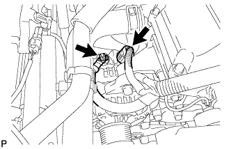
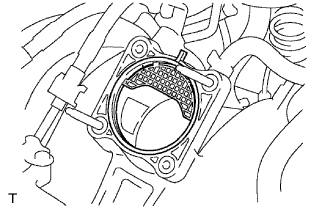
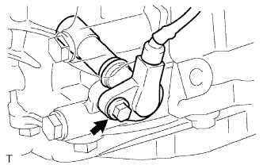
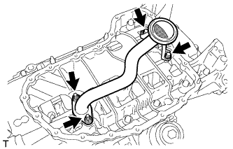
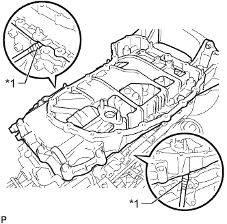
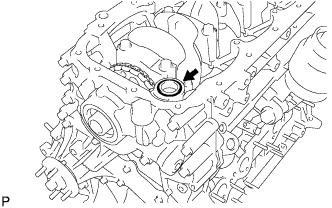
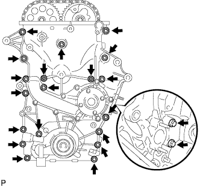
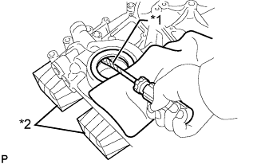

МАСЛЯНЫЙ НАСОС > СНЯТИЕ |
| 1. СНИМИТЕ ДВИГАТЕЛЬ В СБОРЕ |
Снимите двигатель с автомобиля (Нажмите здесь).
| 2. СНИМИТЕ КАТУШКУ ЗАЖИГАНИЯ В СБОРЕ |
 |
Отсоедините разъемы 4 катушек зажигания.
 |
Выверните 4 болта и снимите 4 катушки зажигания.
| 3. СНИМИТЕ ГЕНЕРАТОР В СБОРЕ |
|  |
Снимите заглушку контакта.
Отверните гайку и отсоедините провод генератора.
Отсоедините разъем генератора.
Выверните 2 болта и снимите генератор.
| 4. СНИМИТЕ НАТЯЖИТЕЛЬ ПОЛИКЛИНОВОГО РЕМНЯ В СБОРЕ |
 |
Выверните 3 болта и снимите натяжитель ремня.
| 5. СНИМИТЕ КРОНШТЕЙН КРЕПЛЕНИЯ КОМПРЕССОРА № 1 |
 |
Отверните 5 болта и снимите кронштейн опоры компрессора.
| 6. СНИМИТЕ ВПУСКНОЙ ПАТРУБОК ОХЛАЖДАЮЩЕЙ ЖИДКОСТИ |
 |
Выверните болт, отверните 2 гайки и снимите впускной патрубок охлаждающей жидкости и прокладку.
| 7. СНИМИТЕ ТЕРМОСТАТ |
 |
Снимите термостат с крышки цепного привода газораспределительного механизма.
| 8. СНИМИТЕ КОРПУС ДРОССЕЛЬНОЙ ЗАСЛОНКИ С ЭЛЕКТРОДВИГАТЕЛЕМ В СБОРЕ |
 |
Отсоедините перепускной шланг охлаждающей жидкости.
Отсоедините перепускной шланг охлаждающей жидкости № 2.
Отсоедините датчик положения дроссельной заслонки и разъем электродвигателя привода дроссельной заслонки.
 |
Выверните 2 болта, отверните 2 гайки и снимите корпус дроссельной заслонки с электродвигателем.
|  |
Снимите прокладку с впускного коллектора.
| 9. СНИМИТЕ ВПУСКНОЙ КОЛЛЕКТОР |
Снимите впускной коллектор (Нажмите здесь).
| 10. СНИМИТЕ ОПОРНЫЙ РОЛИК № 1 В СБОРЕ |
 |
Выверните болт и снимите опорный ролик и распорную втулку.
| 11. СНИМИТЕ ДАТЧИК ПОЛОЖЕНИЯ РАСПРЕДВАЛА |
 |
Отсоедините разъем датчика положения распредвала.
Выверните болт и снимите датчик положения распредвала.
| 12. СНИМИТЕ ДАТЧИК ПОЛОЖЕНИЯ КОЛЕНЧАТОГО ВАЛА |
 |
Отсоедините разъем датчика положения коленчатого вала и открепите зажим жгута проводов.
|  |
Выверните болт и снимите датчик положения коленчатого вала.
| 13. СНИМИТЕ ПЕРЕПУСКНОЙ ШЛАНГ ОХЛАЖДАЮЩЕЙ ЖИДКОСТИ № 1 |
Отверните 2 гайки, выверните болт и снимите перепускной патрубок охлаждающей жидкости и прокладку.
| 14. СНИМИТЕ КРЫШКУ ГОЛОВКИ БЛОКА ЦИЛИНДРОВ В СБОРЕ |
 |
Выверните 19 болтов, отверните 2 гайки и снимите крышку головки блока цилиндров и 2 прокладки.
| 15. СНИМИТЕ ШКИВ КОЛЕНЧАТОГО ВАЛА |
 |
С помощью SST зафиксируйте шкив коленчатого вала и ослабьте болт шкива таким образом, чтобы в коленчатый вал было ввернуто 2-3 витка резьбы.
| *a | Ослабьте |
| *b | Удержание |
 |
С помощью SST и болта шкива снимите шкив коленчатого вала.
| *a | Ослабьте |
| *b | Удержание |
| 16. СНИМИТЕ ПОДДОН КАРТЕРА № 2 В СБОРЕ |
 |
Выверните пробку сливного отверстия и снимите прокладку.
Выверните 18 болтов и отверните 2 гайки.
 |
Вставьте лезвие инструмента для обрезки прокладки поддона картера между масляными поддонами. Срежьте имеющийся герметик и снимите масляный поддон.
| 17. СНИМИТЕ МАСЛОПРИЕМНИК С СЕТЧАТЫМ ФИЛЬТРОМ В СБОРЕ |
|  |
Выверните 2 болта, отверните 2 гайки и снимите маслоприемник с сетчатым фильтром и прокладку.
| 18. СНИМИТЕ МАСЛЯНЫЙ ПОДДОН В СБОРЕ |
 |
Выверните 16 болтов и отверните 2 гайки.
|  |
Снимите поддон картера, вставив отвертку между ним и блоком цилиндров.
| *1 | Защитная клейкая лента |
|  |
Снимите кольцевое уплотнение.
| 19. СНИМИТЕ КРЫШКУ ЦЕПНОГО ПРИВОДА ГАЗОРАСПРЕДЕЛИТЕЛЬНОГО МЕХАНИЗМА В СБОРЕ |
|  |
Выверните 19 болтов и отверните 2 гайки, как показано на рисунке.
 |
Снимите крышку цепного привода газораспределительного механизма, вставив отвертку между крышкой цепного привода и головкой блока цилиндров или блоком цилиндров.
| *1 | Защитная клейкая лента |
 |
Снимите 3 кольцевых уплотнения.
| 20. СНИМИТЕ НАСОС СИСТЕМЫ ОХЛАЖДЕНИЯ В СБОРЕ |
 |
Выверните 8 болтов, снимите насос охлаждающей жидкости и прокладку.
| 21. СНИМИТЕ САЛЬНИК КРЫШКИ ЦЕПНОГО ПРИВОДА ГАЗОРАСПРЕДЕЛИТЕЛЬНОГО МЕХАНИЗМА |
|  |
Поместите цепной привод газораспределительного механизма на деревянные бруски.
| *1 | Защитная клейкая лента |
| *2 | Деревянный брусок |
Извлеките сальник с помощью отвертки.